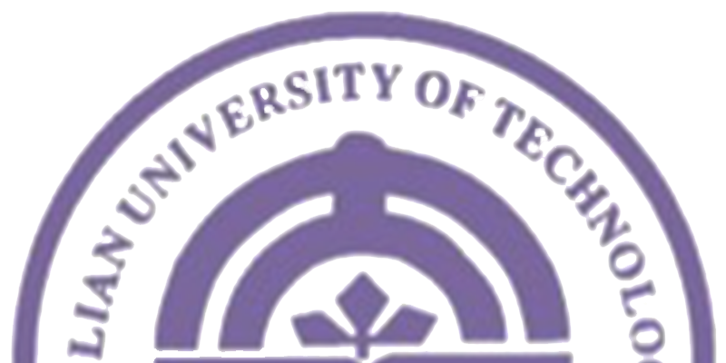
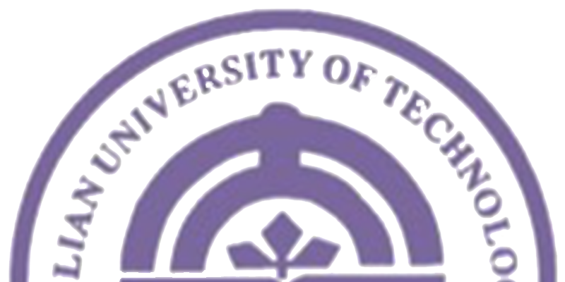

对党风廉政建设和反腐败工作提出的新要求
党的十七届四中全会《决定》主题鲜明、立意高远，内涵丰富、重点突出，
具有很强的思想性、针对性和指导性，是对马克思主义执政党建设规律认识的深化，是对马克思主义党建理论的创新，
是加强和改进新形势下党的建设的纲领性文献，我们要认真学习、深刻领会、全面贯彻。
——要深刻理解和把握加强和改进新形势下党的建设的重要性和紧迫性。我们党成立88年、
执政60年、领导改革开放30年来，团结带领全国各族人民不懈奋斗，战胜各种艰难险阻，取得了革命、建设、改革的伟大胜利，
赢得了中国人民的衷心拥护和国际上的广泛赞誉，彰显了一个马克思主义大党的先进性。当今世界正处在大发展大变革大调整时期，
国际金融危机影响深远，世界经济格局发生新变化，国际力量对比出现新态势，全球思想文化交流交融交锋呈现新特点，
综合国力竞争和各种力量较量更趋激烈，给我国发展带来新的机遇和挑战。我国正处在进一步发展的重要战略机遇期，
在新的历史起点上向前迈进，党在推进改革开放和社会主义现代化建设中肩负任务的艰巨性、复杂性、繁重性世所罕见。
同时，随着我们党历史方位的转变，党内也存在不少不适应新形势新任务要求、不符合党的性质和宗旨的问题，
这些问题严重削弱党的创造力、凝聚力、战斗力，严重损害党同人民群众的血肉联系，严重影响党的执政地位巩固和执政使命实现，
落实党要管党、从严治党的任务比过去任何时候都更为繁重和紧迫。正是基于对这种世情、国情、党情的清醒认识和正确判断，
党的十七届四中全会对加强和改进新形势下党的建设作出战略部署，这对于保持和发展党的先进性、提高党的执政能力、
巩固党的执政地位，确保我们党始终成为坚强的领导核心，团结带领全国各族人民有效应对国际金融危机冲击、
保持经济平稳较快发展，夺取全面建设小康社会新胜利、开创中国特色社会主义事业新局面，具有重大而深远的意义。
——要深刻理解和把握执政党建设的基本经验。我们党是一个善于创造经验、总结经验、
运用经验的马克思主义政党。毛泽东同志曾经形象地指出，共产党是靠总结经验吃饭的。在新中国60年的执政实践中，
我们党不仅围绕什么是社会主义、怎样建设社会主义和实现什么样的发展、怎样发展等重大问题，探索形成了党领导人民建设中
国特色社会主义的基本经验，而且围绕建设什么样的党、怎样建设党这个重大课题，探索形成了我们党作为马克思主义执政党加强
自身建设的基本经验。党的十七届四中全会《决定》从6个方面深刻阐述的这些基本经验，是各有侧重又紧密联系的有机整体。
其中，第一条经验讲的是执政党自身建设的根本。只有坚持把思想理论建设放在首位，坚持解放思想、实事求是、与时俱进，
不断推进马克思主义中国化、时代化、大众化，提高运用科学理论改造主观世界和客观世界能力，党的理论和实践才能始终体
现时代性、把握规律性、富于创造性。第二条经验讲的是执政党自身建设的方向。只有坚持把推进党的建设伟大工程同推进党
领导的伟大事业紧密结合起来，做到伟大事业依靠伟大工程来支撑、伟大工程围绕伟大事业来推进，党的建设才能找准立足点和
着力点，做到围绕中心、服务大局、提供保证。第三条经验讲的是执政党自身建设的主线。只有把执政能力建设和先进性建设作
为根本任务，党的建设才能突出重点、抓住关键，努力集中各方面资源来提高自己，全面查找各方面不足来完善自己，使执政党
的能力和素质始终与时代的要求相适应。第四条经验讲的是执政党自身建设的核心。只有坚持立党为公、执政为民，保持党同人民
群众的血肉联系，我们党才能保持根本性质、恪守根本宗旨、牢记根本使命，不断增强阶级基础和扩大群众基础，巩固领导地位
和执政地位，始终得到人民群众支持和拥护。第五条经验讲的是执政党自身建设的动力。只有坚持继承和创新相结合，坚持用时代
发展要求审视自己、以改革创新精神提高和完善自己，不断推进党的建设实践创新、理论创新、制度创新，我们党才能永葆蓬勃生
机和创造活力。第六条经验讲的是执政党自身建设的保证。只有坚持党要管党、从严治党，提高管党治党水平，我们党才能不断提
高拒腐防变和抵御风险能力，跳出政权兴衰的历史周期律，始终保持先进性和纯洁性，永不变色、永不变质、永远立于不败之地。
这6条基本经验必须作为加强和改进新形势下党的建设的重要指导原则长期坚持，并在实践中不断丰富发展。